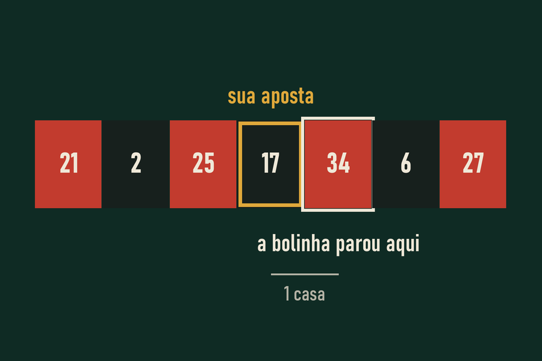

O que acontece no cérebro
Em 2009, pesquisadores da Universidade de Cambridge colocaram voluntários num aparelho de ressonância enquanto jogavam uma máquina simples. Quando o resultado chegava perto do prêmio, as áreas do cérebro ligadas à recompensa reagiam quase como numa vitória. E, logo depois de um quase, os participantes diziam ter mais vontade de continuar jogando, não menos.
Do ponto de vista da matemática, o quase não existe. O sete parar logo acima da linha ou do outro lado do rolo dá exatamente o mesmo prejuízo. Mas para quem joga, o quase vira um sinal de que “está chegando perto”, de que a habilidade está melhorando ou de que a sorte está virando.

Por que as máquinas mostram tantos quases
Numa roleta física, os quases acontecem por acaso. Em caça-níqueis e jogos digitais, o resultado de cada rolo é decidido por um programa, e o desenho da tela pode mostrar o símbolo premiado logo acima ou abaixo da linha com uma frequência maior do que o acaso produziria.
Esse recurso foi estudado desde os anos 1980, quando o psicólogo R. L. Reid descreveu o efeito do quase acerto no comportamento de jogo. Hoje ele é discutido por órgãos reguladores de vários países, porque transforma uma derrota em estímulo para continuar.
Como este site calcula um quase
No simulador, quando você aposta num número, o quase é a bolinha cair numa das duas casas vizinhas na ordem real da roda. Quando você aposta numa cor, o quase é perder caindo ao lado de uma casa da sua cor.
Na aposta em cor, isso acontece em quase toda derrota, porque as cores se alternam na roda. Para quem joga, toda derrota parece ter sido por pouco.